Model selection: the evidence for the number of classes
Written by Mohammed Saqr and Sonsoles López-Pernas
Source:vignettes/articles/model-selection.Rmd
model-selection.RmdIn finite mixture modelling, the number of latent classes is not known a priori and is not a parameter of the model; it must be determined by comparing models fitted with different numbers of classes. No single statistic identifies the correct number: information criteria, likelihood-based tests and indices of classification quality each have known limitations, and they frequently disagree (Nylund, Asparouhov and Muthén, 2007). Class enumeration is therefore an inferential judgement that integrates several sources of evidence and is reported transparently. This guide describes each source of evidence that latents computes for a set of candidate models: its definition, its interpretation, and the conditions under which it is unreliable. It then outlines how these sources are combined into a defensible and reproducible decision. A complete applied example is given in Class enumeration in mixture models.
The evidence considered here addresses five distinct questions, summarized below together with the functions that report it.
| Question | Evidence | Functions |
|---|---|---|
| Which candidate balances fit and size best? | Information criteria and their minima |
as.data.frame(), get_results(x, "best"),
plot(x)
|
| Where do added classes stop paying off? | Changes between neighbouring candidates and the knee of each curve |
get_results(x, "deltas"),
get_results(x, "knees"),
plot(x, what = "deltas"),
plot(x, what = "heatmap")
|
| Are the classes distinct? | Entropy, average posterior probability, odds of correct classification |
get_results(x, "classification"),
plot(x, what = "diagnostics")
|
| Can the estimate be trusted? | Convergence, boundary estimates, replication of the best likelihood, the smallest class |
plot(x, what = "trust"),
plot(x, what = "smallest")
|
| Is one more class supported? | The bootstrap likelihood ratio test of neighbouring candidates | bootstrap_lrt() |
plot(x, what = "selection") displays the evidence of the
second, third and fourth rows jointly, and compare_models()
tabulates selected candidates side by side.
The candidates
The examples use course_engagement, in which course
enrolments are nested within students and each enrolment is described by
five standardized indicators of activity. A model is fitted for every
combination of one to six profiles and one to four group classes, with
class-specific variances and no covariances ("VVI"). Three
random starts per candidate are used to limit computation; applied
analyses should use at least ten, because replication of the maximum
likelihood across starts is itself part of the evidence.
activity <- c("browse", "lectures", "forum_read", "forum_post", "attendance")
models <- enumerate_classes(course_engagement, activity, "student",
n_profiles = 1:6, n_group_classes = 1:4,
model = "VVI", n_starts = 3, seed = 1)
models
#> Class enumeration: 24 candidate models
#> candidate n_profiles n_group_classes model log_likelihood n_parameters aic bic_groups
#> profiles1_groups1 1 1 VVI -10007 10 20035 20062
#> profiles2_groups1 2 1 VVI -8615 21 17272 17328
#> profiles3_groups1 3 1 VVI -8537 32 17137 17222
#> profiles4_groups1 4 1 VVI -8501 43 17088 17203
#> profiles5_groups1 5 1 VVI -8484 54 17077 17220
#> profiles6_groups1 6 1 VVI -8481 65 17093 17266
#> profiles1_groups2 1 2 VVI NA NA NA NA
#> profiles2_groups2 2 2 VVI -8440 23 16926 16987
#> profiles3_groups2 3 2 VVI -8365 35 16799 16892
#> profiles4_groups2 4 2 VVI -8326 47 16746 16872
#> profiles5_groups2 5 2 VVI -8309 59 16735 16892
#> profiles6_groups2 6 2 VVI -8297 71 16737 16926
#> profiles1_groups3 1 3 VVI NA NA NA NA
#> profiles2_groups3 2 3 VVI -8421 25 16892 16959
#> profiles3_groups3 3 3 VVI -8348 38 16773 16874
#> profiles4_groups3 4 3 VVI -8307 51 16716 16852
#> profiles5_groups3 5 3 VVI -8291 64 16709 16880
#> profiles6_groups3 6 3 VVI -8279 77 16712 16917
#> profiles1_groups4 1 4 VVI NA NA NA NA
#> profiles2_groups4 2 4 VVI -8415 27 16884 16956
#> profiles3_groups4 3 4 VVI -8343 41 16767 16876
#> profiles4_groups4 4 4 VVI -8301 55 16711 16858
#> profiles5_groups4 5 4 VVI -8283 69 16704 16887
#> profiles6_groups4 6 4 VVI -8268 83 16703 16924
#> bic_individual icl_individual profile_entropy group_entropy avepp_min avepp_max avepp_mean
#> 20088 20088 NA NA NA NA NA
#> 17383 17537 0.922 NA 0.974 0.982 0.978
#> 17306 18017 0.772 NA 0.832 0.964 0.886
#> 17314 18359 0.735 NA 0.803 0.849 0.835
#> 17361 18401 0.773 NA 0.804 0.962 0.861
#> 17435 19124 0.669 NA 0.627 0.812 0.729
#> NA NA NA NA NA NA NA
#> 17047 17168 0.938 0.940 0.982 0.985 0.983
#> 16983 17640 0.790 0.943 0.849 0.979 0.893
#> 16994 18021 0.739 0.937 0.791 0.858 0.835
#> 17045 18076 0.775 0.965 0.803 0.860 0.839
#> 17110 18476 0.732 0.946 0.699 0.845 0.780
#> NA NA NA NA NA NA NA
#> 17024 17142 0.940 0.816 0.982 0.986 0.984
#> 16973 17622 0.792 0.797 0.845 0.978 0.892
#> 16985 18014 0.739 0.823 0.801 0.854 0.836
#> 17046 18353 0.714 0.854 0.628 0.843 0.779
#> 17117 18780 0.674 0.853 0.655 0.795 0.743
#> NA NA NA NA NA NA NA
#> 17026 17140 0.942 0.798 0.984 0.986 0.985
#> 16983 17630 0.793 0.772 0.843 0.980 0.892
#> 17000 18027 0.740 0.803 0.801 0.853 0.837
#> 17067 18207 0.751 0.830 0.786 0.853 0.820
#> 17139 18540 0.725 0.851 0.654 0.847 0.783
#> avepp_below group_avepp_min group_avepp_max group_avepp_mean group_avepp_below converged boundary
#> NA NA NA NA NA TRUE FALSE
#> 0 NA NA NA NA TRUE FALSE
#> 0 NA NA NA NA TRUE FALSE
#> 0 NA NA NA NA TRUE FALSE
#> 0 NA NA NA NA TRUE FALSE
#> 5 NA NA NA NA TRUE FALSE
#> NA NA NA NA NA FALSE NA
#> 0 0.969 0.992 0.980 0 TRUE FALSE
#> 0 0.977 0.992 0.985 0 TRUE FALSE
#> 1 0.975 0.990 0.983 0 TRUE FALSE
#> 0 0.990 0.996 0.993 0 TRUE FALSE
#> 4 0.972 0.987 0.979 0 TRUE FALSE
#> NA NA NA NA NA FALSE NA
#> 0 0.900 0.962 0.923 0 TRUE FALSE
#> 0 0.864 0.977 0.913 0 TRUE FALSE
#> 0 0.874 0.981 0.923 0 TRUE FALSE
#> 1 0.917 0.987 0.941 0 TRUE FALSE
#> 6 0.915 0.984 0.941 0 TRUE FALSE
#> NA NA NA NA NA FALSE NA
#> 0 0.851 0.912 0.877 0 TRUE FALSE
#> 0 0.841 0.902 0.864 0 TRUE FALSE
#> 0 0.867 0.903 0.885 0 TRUE FALSE
#> 1 0.882 0.926 0.904 0 TRUE FALSE
#> 3 0.898 0.940 0.916 0 TRUE FALSE
#> n_best_replicated
#> 3
#> 3
#> 3
#> 3
#> 1
#> 1
#> NA
#> 3
#> 3
#> 3
#> 2
#> 1
#> NA
#> 3
#> 3
#> 3
#> 2
#> 2
#> NA
#> 3
#> 3
#> 2
#> 1
#> 1
#> 3 candidate(s) did not converge; see as.data.frame(x).
#> No candidate is selected automatically. Compare one convention consistently.The grid comprises 24 candidates, of which 21 were estimated. A model
with one profile and several group classes is not identified, because
group classes defined over a single profile cannot differ; such
candidates are listed but not estimated. Each candidate is labelled by
its numbers of classes (e.g., profiles4_groups3 for four
profiles and three group classes), and the functions below accept this
label.
Before fitting: starts, scaling and missing values
Three analytic decisions precede estimation. Each is passed through
the ... argument of enumerate_classes(),
enumerate_lpa() and enumerate_lca(), so that
it applies identically to every candidate, and each should be reported
alongside the selected number of classes.
Random starts
The likelihood of a finite mixture model is typically multimodal, and
the EM algorithm converges to a local maximum determined by its starting
values. n_starts sets the number of random starts per
candidate; increasing it reduces the probability that a candidate is
reported at a local rather than the global maximum. A solution at a
local maximum usually separates its classes less well, so re-estimation
with more starts frequently increases entropy and AvePP. When more
starts are required, the entire grid is re-estimated with the same
number; re-estimating only the candidates of interest would confer on
them an advantage in likelihood and separation that the remaining
candidates were not given.
models <- enumerate_classes(course_engagement, activity, "student",
n_profiles = 1:6, n_group_classes = 1:4,
model = "VVI", n_starts = 20, seed = 1)Additional starts also make a degenerate solution more likely to be
found when a candidate has more profiles than the data support: one
profile collapses on a single observation, with every variance at its
lower bound (min_variance). The Gaussian likelihood of such
a profile increases without limit as its variances shrink, so its value,
and every criterion computed from it, is determined by
min_variance rather than by the data, and BIC can favour
one profile too many as a result. In a simulation with 500 starts per
candidate, this occurred in two of 29 datasets; with ten or twenty
starts it was rare. Such candidates carry boundary = TRUE
in the table of candidates. boundary = "exclude" sets aside
every start with a variance at its lower bound and retains the best of
the remaining starts; the default, "allow", retains the
highest likelihood, as Mplus does. The option is advisable when many
starts are used, and it has no effect on categorical indicators, which
have no variances.
models <- enumerate_classes(course_engagement, activity, "student",
n_profiles = 1:6, n_group_classes = 1:4,
model = "VVI", n_starts = 200,
boundary = "exclude", seed = 1)Centring and scaling
centering subtracts a mean and scaling
divides by a standard deviation, each computed at one of two levels:
over all observations ("grand") or within each group
("person"). Combined, they yield the conventional z-scores.
Grand-mean standardization
(centering = "grand", scaling = "grand") expresses each
indicator in sample standard deviations; within-person standardization
(centering = "person", scaling = "person") expresses each
observation as a deviation from its own group’s mean in units of that
group’s standard deviation, so that the profiles describe within-person
fluctuation rather than between-person level.
Under covariance structures that estimate a separate variance for
each indicator (EEI, VVI, EEE,
VVV, EVI, VEI), grand-mean
scaling is a reparameterization: it alters the units of the estimates
but leaves class membership, entropy and AvePP unchanged. The spherical
structures EII and VII constrain all
indicators to a common variance, so that an unscaled indicator with a
large range would dominate the classification; under these structures
the indicators should be standardized beforehand.
srl_indicators <- c("cognitive_strategies", "intrinsic_value",
"self_efficacy", "self_regulation", "test_anxiety")
spherical <- enumerate_lpa(srl, srl_indicators, n_profiles = 2:4,
model = "EII", centering = "grand",
scaling = "grand", n_starts = 5, seed = 1)
get_results(spherical, "best")
#> criterion convention candidate n_profiles n_group_classes model value
#> 1 aic <NA> profiles4 4 1 EII 3372
#> 2 kic <NA> profiles4 4 1 EII 3399
#> 3 bic groups profiles4 4 1 EII 3461
#> 4 bic individuals profiles4 4 1 EII 3461
#> 5 sabic groups profiles4 4 1 EII 3385
#> 6 sabic individuals profiles4 4 1 EII 3385
#> 7 caic groups profiles4 4 1 EII 3485
#> 8 caic individuals profiles4 4 1 EII 3485
#> 9 awe groups profiles4 4 1 EII 3670
#> 10 awe individuals profiles4 4 1 EII 3779
#> 11 icl groups profiles4 4 1 EII 3461
#> 12 icl individuals profiles4 4 1 EII 3570
#> 13 clc groups profiles4 4 1 EII 3324
#> 14 clc individuals profiles4 4 1 EII 3433Because scaling shifts the log likelihood by a constant, information criteria are comparable only among candidates estimated under the same centring and scaling, as is the case within a single grid.
Missing values
With missing = "fiml", the likelihood of each
observation is evaluated over its observed indicators, without
imputation; under the missing-at-random assumption this yields unbiased
estimates. An observation with all indicators missing contributes
nothing to the likelihood, and its posterior probability equals the
prior implied by its group; it is therefore not classified. Following
Mplus, such observations are excluded from the sample size of the
individual-level information criteria, from entropy and AvePP, from the
classification tables and from the effective class counts;
n_informative records the number retained, and the printed
fit reports the number excluded. Groups in which no observation has an
observed indicator are excluded from the group-level sample size and
statistics on the same grounds (n_informative_groups),
whereas a group with at least one observed row is retained. Partially
observed rows remain in every statistic: they are classified, with
correspondingly greater uncertainty, from the indicators available.
Setting drop_empty = FALSE restores the counting rules of
latents 0.9.37 and earlier, so that previously reported results can be
reproduced.
set.seed(3)
incomplete <- course_engagement
empty <- sample(nrow(incomplete), 150)
incomplete[empty, activity] <- NA
partial <- setdiff(sample(nrow(incomplete), 150), empty)
incomplete[partial, "attendance"] <- NA
incomplete_fit <- multilpa(incomplete, activity, "student", n_profiles = 3,
n_group_classes = 2, model = "VVI",
missing = "fiml", n_starts = 3, seed = 1)
get_results(incomplete_fit, "entropy")
#> level n_classes n_units entropy_sum relative_entropy
#> 1 individuals 3 1272 321.52 0.770
#> 2 groups 2 106 5.42 0.926Individual-level entropy is computed over 1272 observations: the 1,422 enrolments less the 150 with no observed indicator. Deleting those rows from the data yields identical estimates, likelihood and classification statistics. Deleting partially observed rows, by contrast, alters the sample and, where missingness depends on observed values, biases the estimated profiles.
Information criteria
Definitions
Each criterion adds a penalty to the deviance, -2L,
where L is the maximized log likelihood. Let q
denote the number of free parameters, n the sample size,
and EN = -sum(p log p) the classification entropy, summed
over all units and classes of the posterior probabilities
p:
| Criterion | Formula | Penalty depends on | Reference |
|---|---|---|---|
aic |
-2L + 2q |
parameters only | Akaike (1974) |
kic |
-2L + 3(q + 1) |
parameters only | Cavanaugh (1999) |
bic |
-2L + q log(n) |
sample size | Schwarz (1978) |
sabic |
-2L + q log((n + 2) / 24) |
sample size | Sclove (1987) |
caic |
-2L + q (log(n) + 1) |
sample size | Bozdogan (1987) |
icl |
-2L + q log(n) + 2 EN |
sample size and classification | Biernacki, Celeux and Govaert (2000) |
awe |
-2(L - EN) + 2q (1.5 + log(n)) |
sample size and classification | Banfield and Raftery (1993) |
clc |
-2L + 2 EN |
classification only | Biernacki and Govaert (1997) |
Smaller values indicate a better trade-off between fit and
complexity. The penalty per parameter is 2 for AIC, 3 for KIC,
log((n + 2) / 24) for SABIC, log(n) for BIC
and log(n) + 1 for CAIC; for samples beyond a few dozen
units, AIC is therefore the most lenient and CAIC the most conservative,
and heavier penalties favour fewer classes. ICL and AWE additionally
penalize classification uncertainty, since overlapping classes increase
EN; they consequently favour fewer and better-separated
classes than BIC. CLC carries no per-parameter penalty, only the entropy
term, and may favour many classes when these are well separated and few
when they are not. CLC is defined here, as are ICL and AWE, on the
entropy sum; some software reports a variant based on relative entropy,
which is bounded by one and therefore imposes almost no penalty, and the
two are not comparable.
Two conventions for the sample size
In a two-level model the sample size may be defined as the number of
groups (here, 106 students) or the number of observations (here, 1,422
enrolments). latents reports every sample-size-dependent criterion under
both conventions: columns ending in _groups use the number
of groups and the posterior probabilities of the group classes for
EN, and columns ending in _individual use the
number of observations and the posterior probabilities of the profiles.
Neither constitutes a uniquely correct multilevel BIC; each is a stated
convention, and an analysis adopts one and applies it to every
candidate. AIC and KIC do not depend on the sample size.
In a single-level model the two sample sizes coincide, and BIC, SABIC
and CAIC are identical under both conventions. The entropy-based
criteria are not: their _groups columns use the
classification of the group classes, of which a single-level model has
only one, so they carry no classification penalty and ICL reduces to
BIC. For single-level models, the _individual columns of
ICL, AWE and CLC should therefore be used.
The table of every candidate
as.data.frame() returns one row per candidate,
containing every criterion under both conventions together with the log
likelihood, the number of parameters, summaries of classification
quality and diagnostics of estimation.
as.data.frame(models)
#> candidate n_profiles n_group_classes model log_likelihood n_parameters aic kic
#> 1 profiles1_groups1 1 1 VVI -10007 10 20035 20048
#> 2 profiles2_groups1 2 1 VVI -8615 21 17272 17296
#> 3 profiles3_groups1 3 1 VVI -8537 32 17137 17172
#> 4 profiles4_groups1 4 1 VVI -8501 43 17088 17134
#> 5 profiles5_groups1 5 1 VVI -8484 54 17077 17134
#> 6 profiles6_groups1 6 1 VVI -8481 65 17093 17161
#> 7 profiles1_groups2 1 2 VVI NA NA NA NA
#> 8 profiles2_groups2 2 2 VVI -8440 23 16926 16952
#> 9 profiles3_groups2 3 2 VVI -8365 35 16799 16837
#> 10 profiles4_groups2 4 2 VVI -8326 47 16746 16796
#> 11 profiles5_groups2 5 2 VVI -8309 59 16735 16797
#> 12 profiles6_groups2 6 2 VVI -8297 71 16737 16811
#> 13 profiles1_groups3 1 3 VVI NA NA NA NA
#> 14 profiles2_groups3 2 3 VVI -8421 25 16892 16920
#> 15 profiles3_groups3 3 3 VVI -8348 38 16773 16814
#> 16 profiles4_groups3 4 3 VVI -8307 51 16716 16770
#> 17 profiles5_groups3 5 3 VVI -8291 64 16709 16776
#> 18 profiles6_groups3 6 3 VVI -8279 77 16712 16792
#> 19 profiles1_groups4 1 4 VVI NA NA NA NA
#> 20 profiles2_groups4 2 4 VVI -8415 27 16884 16914
#> 21 profiles3_groups4 3 4 VVI -8343 41 16767 16811
#> 22 profiles4_groups4 4 4 VVI -8301 55 16711 16769
#> 23 profiles5_groups4 5 4 VVI -8283 69 16704 16776
#> 24 profiles6_groups4 6 4 VVI -8268 83 16703 16789
#> bic_groups bic_individual sabic_groups sabic_individual caic_groups caic_individual awe_groups
#> 1 20062 20088 20030 20056 20072 20098 20138
#> 2 17328 17383 17262 17316 17349 17404 17489
#> 3 17222 17306 17121 17204 17254 17338 17468
#> 4 17203 17314 17067 17178 17246 17357 17532
#> 5 17220 17361 17050 17189 17274 17415 17634
#> 6 17266 17435 17061 17228 17331 17500 17764
#> 7 NA NA NA NA NA NA NA
#> 8 16987 17047 16914 16974 17010 17070 17172
#> 9 16892 16983 16782 16872 16927 17018 17169
#> 10 16872 16994 16723 16844 16919 17041 17241
#> 11 16892 17045 16706 16858 16951 17104 17350
#> 12 16926 17110 16701 16884 16997 17181 17478
#> 13 NA NA NA NA NA NA NA
#> 14 16959 17024 16880 16944 16984 17049 17193
#> 15 16874 16973 16754 16852 16912 17011 17212
#> 16 16852 16985 16691 16823 16903 17036 17284
#> 17 16880 17046 16677 16842 16944 17110 17404
#> 18 16917 17117 16674 16872 16994 17194 17541
#> 19 NA NA NA NA NA NA NA
#> 20 16956 17026 16871 16941 16983 17053 17223
#> 21 16876 16983 16747 16853 16917 17024 17258
#> 22 16858 17000 16684 16826 16913 17055 17337
#> 23 16887 17067 16669 16847 16956 17136 17466
#> 24 16924 17139 16661 16876 17007 17222 17604
#> awe_individual icl_groups icl_individual clc_groups clc_individual profile_entropy group_entropy
#> 1 20190 20062 20088 20015 20015 NA NA
#> 2 17753 17328 17537 17230 17385 0.922 NA
#> 3 18345 17222 18017 17073 17785 0.772 NA
#> 4 18800 17203 18359 17002 18047 0.735 NA
#> 5 18955 17220 18401 16969 18009 0.773 NA
#> 6 19791 17266 19124 16963 18652 0.669 NA
#> 7 NA NA NA NA NA NA NA
#> 8 17404 16996 17168 16889 17002 0.938 0.940
#> 9 18000 16901 17640 16737 17386 0.790 0.943
#> 10 18503 16881 18021 16662 17680 0.739 0.937
#> 11 18682 16897 18076 16622 17648 0.775 0.965
#> 12 19205 16934 18476 16602 17961 0.732 0.946
#> 13 NA NA NA NA NA NA NA
#> 14 17398 17001 17142 16885 16960 0.940 0.816
#> 15 18012 16921 17622 16744 17346 0.792 0.797
#> 16 18537 16893 18014 16656 17644 0.739 0.823
#> 17 19010 16914 18353 16615 17888 0.714 0.854
#> 18 19570 16951 18780 16592 18221 0.674 0.853
#> 19 NA NA NA NA NA NA NA
#> 20 17417 17016 17140 16890 16944 0.942 0.798
#> 21 18051 16943 17630 16752 17332 0.793 0.772
#> 22 18592 16916 18027 16659 17628 0.740 0.803
#> 23 18915 16937 18207 16616 17706 0.751 0.830
#> 24 19392 16967 18540 16580 17938 0.725 0.851
#> avepp_min avepp_max avepp_mean avepp_below group_avepp_min group_avepp_max group_avepp_mean
#> 1 NA NA NA NA NA NA NA
#> 2 0.974 0.982 0.978 0 NA NA NA
#> 3 0.832 0.964 0.886 0 NA NA NA
#> 4 0.803 0.849 0.835 0 NA NA NA
#> 5 0.804 0.962 0.861 0 NA NA NA
#> 6 0.627 0.812 0.729 5 NA NA NA
#> 7 NA NA NA NA NA NA NA
#> 8 0.982 0.985 0.983 0 0.969 0.992 0.980
#> 9 0.849 0.979 0.893 0 0.977 0.992 0.985
#> 10 0.791 0.858 0.835 1 0.975 0.990 0.983
#> 11 0.803 0.860 0.839 0 0.990 0.996 0.993
#> 12 0.699 0.845 0.780 4 0.972 0.987 0.979
#> 13 NA NA NA NA NA NA NA
#> 14 0.982 0.986 0.984 0 0.900 0.962 0.923
#> 15 0.845 0.978 0.892 0 0.864 0.977 0.913
#> 16 0.801 0.854 0.836 0 0.874 0.981 0.923
#> 17 0.628 0.843 0.779 1 0.917 0.987 0.941
#> 18 0.655 0.795 0.743 6 0.915 0.984 0.941
#> 19 NA NA NA NA NA NA NA
#> 20 0.984 0.986 0.985 0 0.851 0.912 0.877
#> 21 0.843 0.980 0.892 0 0.841 0.902 0.864
#> 22 0.801 0.853 0.837 0 0.867 0.903 0.885
#> 23 0.786 0.853 0.820 1 0.882 0.926 0.904
#> 24 0.654 0.847 0.783 3 0.898 0.940 0.916
#> group_avepp_below converged boundary n_best_replicated warnings
#> 1 NA TRUE FALSE 3
#> 2 NA TRUE FALSE 3
#> 3 NA TRUE FALSE 3
#> 4 NA TRUE FALSE 3
#> 5 NA TRUE FALSE 1
#> 6 NA TRUE FALSE 1
#> 7 NA FALSE NA NA
#> 8 0 TRUE FALSE 3
#> 9 0 TRUE FALSE 3
#> 10 0 TRUE FALSE 3
#> 11 0 TRUE FALSE 2
#> 12 0 TRUE FALSE 1
#> 13 NA FALSE NA NA
#> 14 0 TRUE FALSE 3
#> 15 0 TRUE FALSE 3
#> 16 0 TRUE FALSE 3
#> 17 0 TRUE FALSE 2
#> 18 0 TRUE FALSE 2
#> 19 NA FALSE NA NA
#> 20 0 TRUE FALSE 3
#> 21 0 TRUE FALSE 3
#> 22 0 TRUE FALSE 2
#> 23 0 TRUE FALSE 1
#> 24 0 TRUE FALSE 1
#> error
#> 1 <NA>
#> 2 <NA>
#> 3 <NA>
#> 4 <NA>
#> 5 <NA>
#> 6 <NA>
#> 7 Multiple group classes are not identifiable with one profile or only singleton groups.
#> 8 <NA>
#> 9 <NA>
#> 10 <NA>
#> 11 <NA>
#> 12 <NA>
#> 13 Multiple group classes are not identifiable with one profile or only singleton groups.
#> 14 <NA>
#> 15 <NA>
#> 16 <NA>
#> 17 <NA>
#> 18 <NA>
#> 19 Multiple group classes are not identifiable with one profile or only singleton groups.
#> 20 <NA>
#> 21 <NA>
#> 22 <NA>
#> 23 <NA>
#> 24 <NA>The minimum of each criterion
get_results(x, "best") reduces this table to one row per
criterion and convention, giving the candidate at which the criterion
attains its minimum, its numbers of classes and the minimum value. It
identifies the candidate favoured by each criterion and makes no further
inference.
get_results(models, "best")
#> criterion convention candidate n_profiles n_group_classes model value
#> 1 aic <NA> profiles6_groups4 6 4 VVI 16703
#> 2 kic <NA> profiles4_groups4 4 4 VVI 16769
#> 3 bic groups profiles4_groups3 4 3 VVI 16852
#> 4 bic individuals profiles3_groups3 3 3 VVI 16973
#> 5 sabic groups profiles6_groups4 6 4 VVI 16661
#> 6 sabic individuals profiles4_groups3 4 3 VVI 16823
#> 7 caic groups profiles4_groups3 4 3 VVI 16903
#> 8 caic individuals profiles3_groups3 3 3 VVI 17011
#> 9 awe groups profiles3_groups2 3 2 VVI 17169
#> 10 awe individuals profiles2_groups3 2 3 VVI 17398
#> 11 icl groups profiles4_groups2 4 2 VVI 16881
#> 12 icl individuals profiles2_groups4 2 4 VVI 17140
#> 13 clc groups profiles6_groups4 6 4 VVI 16580
#> 14 clc individuals profiles2_groups4 2 4 VVI 16944In this example the criteria favour 8 different candidates: BIC with students as units favours profiles4_groups3, BIC with enrolments as units profiles3_groups3, ICL with students as units profiles4_groups2, and AIC profiles6_groups4. Such disagreement is typical rather than anomalous. The criteria were derived for different purposes, and their penalties largely account for the pattern: AIC, with the lightest penalty, favours the largest candidate, whereas the entropy-based criteria favour smaller ones.
A minimum at the boundary of the grid, that is, at the largest number of profiles or group classes estimated, indicates that the criterion was still decreasing and that the range examined was too narrow. The range is then extended until the minimum lies in its interior. Where the criterion continues to decrease at every size the data can support, as is common in large samples, the magnitude of successive decreases becomes the relevant evidence (see below).
Plotting the criteria
plot() displays the criteria against the number of
profiles, with one line per number of group classes and the minimum of
each criterion marked. what selects criteria by column
name, and what = "all" displays all of them.
plot(models)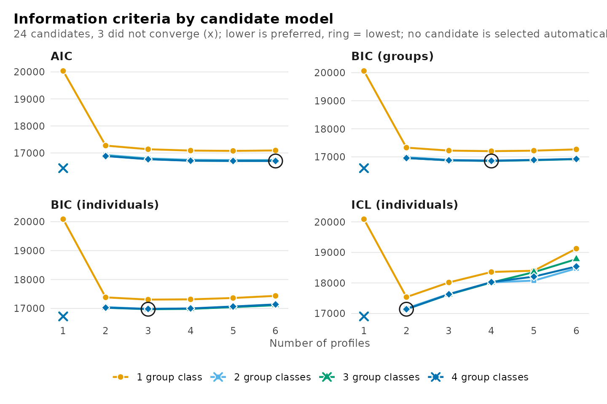
plot(models, what = "bic_groups")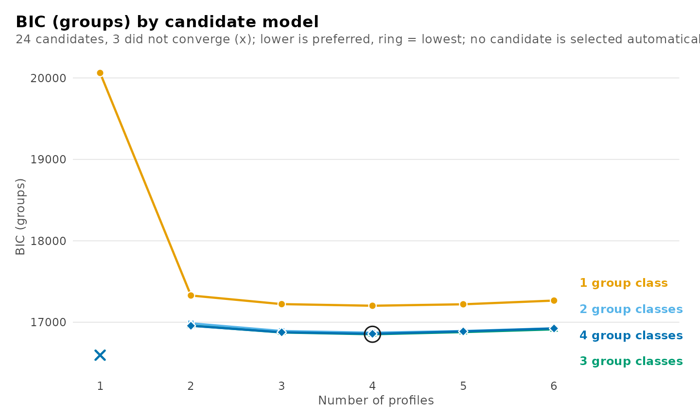
Where added classes stop paying off
Deltas
When a criterion decreases across the entire range, its minimum is
uninformative, but the magnitude of each decrease is not.
get_results(x, "deltas") reports, for every candidate, the
decrease in a criterion relative to the neighbouring candidate with one
profile fewer (delta_profile, from
from_profile) and with one group class fewer
(delta_group_class, from from_group_class). A
positive value indicates that the additional class reduced the
criterion, and a negative value that it increased it; candidates without
such a neighbour in the grid have NA. BIC with groups as
units is used unless using specifies another criterion.
get_results(models, "deltas")
#> candidate n_profiles n_group_classes model criterion value delta_profile
#> 1 profiles1_groups1 1 1 VVI bic_groups 20062 NA
#> 2 profiles2_groups1 2 1 VVI bic_groups 17328 2733.2
#> 3 profiles3_groups1 3 1 VVI bic_groups 17222 105.9
#> 4 profiles4_groups1 4 1 VVI bic_groups 17203 19.9
#> 5 profiles5_groups1 5 1 VVI bic_groups 17220 -17.9
#> 6 profiles6_groups1 6 1 VVI bic_groups 17266 -45.6
#> 7 profiles1_groups2 1 2 VVI bic_groups NA NA
#> 8 profiles2_groups2 2 2 VVI bic_groups 16987 NA
#> 9 profiles3_groups2 3 2 VVI bic_groups 16892 94.6
#> 10 profiles4_groups2 4 2 VVI bic_groups 16872 20.7
#> 11 profiles5_groups2 5 2 VVI bic_groups 16892 -20.6
#> 12 profiles6_groups2 6 2 VVI bic_groups 16926 -33.5
#> 13 profiles1_groups3 1 3 VVI bic_groups NA NA
#> 14 profiles2_groups3 2 3 VVI bic_groups 16959 NA
#> 15 profiles3_groups3 3 3 VVI bic_groups 16874 84.6
#> 16 profiles4_groups3 4 3 VVI bic_groups 16852 21.9
#> 17 profiles5_groups3 5 3 VVI bic_groups 16880 -27.5
#> 18 profiles6_groups3 6 3 VVI bic_groups 16917 -37.5
#> 19 profiles1_groups4 1 4 VVI bic_groups NA NA
#> 20 profiles2_groups4 2 4 VVI bic_groups 16956 NA
#> 21 profiles3_groups4 3 4 VVI bic_groups 16876 79.9
#> 22 profiles4_groups4 4 4 VVI bic_groups 16858 18.8
#> 23 profiles5_groups4 5 4 VVI bic_groups 16887 -29.7
#> 24 profiles6_groups4 6 4 VVI bic_groups 16924 -36.3
#> from_profile delta_group_class from_group_class
#> 1 <NA> NA <NA>
#> 2 profiles1_groups1 NA <NA>
#> 3 profiles2_groups1 NA <NA>
#> 4 profiles3_groups1 NA <NA>
#> 5 profiles4_groups1 NA <NA>
#> 6 profiles5_groups1 NA <NA>
#> 7 <NA> NA <NA>
#> 8 <NA> 341.51 profiles2_groups1
#> 9 profiles2_groups2 330.20 profiles3_groups1
#> 10 profiles3_groups2 330.96 profiles4_groups1
#> 11 profiles4_groups2 328.23 profiles5_groups1
#> 12 profiles5_groups2 340.42 profiles6_groups1
#> 13 <NA> NA <NA>
#> 14 <NA> 28.18 profiles2_groups2
#> 15 profiles2_groups3 18.19 profiles3_groups2
#> 16 profiles3_groups3 19.43 profiles4_groups2
#> 17 profiles4_groups3 12.55 profiles5_groups2
#> 18 profiles5_groups3 8.51 profiles6_groups2
#> 19 <NA> NA <NA>
#> 20 <NA> 2.37 profiles2_groups3
#> 21 profiles2_groups4 -2.43 profiles3_groups3
#> 22 profiles3_groups4 -5.54 profiles4_groups3
#> 23 profiles4_groups4 -7.79 profiles5_groups3
#> 24 profiles5_groups4 -6.62 profiles6_groups3With three group classes, the third profile reduces BIC by 85 and the fourth by 22, whereas the fifth increases it by 27 (shown as a negative decrease). The candidate with two profiles has no profile-wise delta because its neighbour, with one profile and three group classes, is not identified. Diminishing decreases indicate the point beyond which additional profiles capture detail rather than structure, and the first negative value marks where they cease to improve the criterion. The deltas are displayed for both directions: along the number of profiles (left) and along the number of group classes (right).
plot(models, what = "deltas")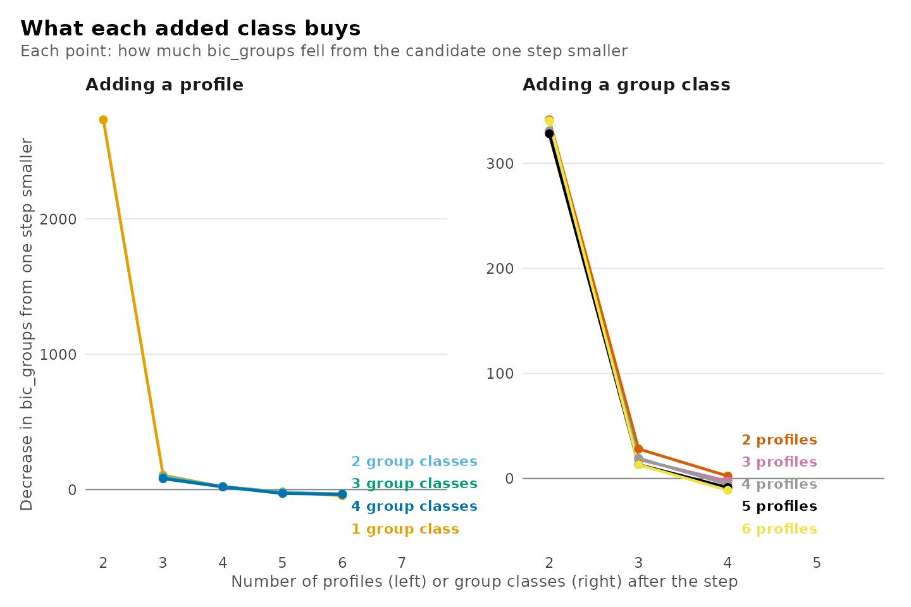
The same display is available for any criterion:
plot(models, what = "deltas", using = "icl_individual")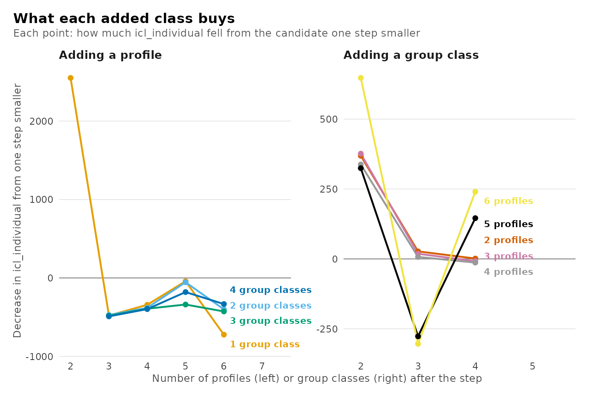
Knees
The knee, or elbow, of a decreasing curve is the point at which it
changes from steep to flat. get_results(x, "knees") locates
it with a simplified, geometric version of the Kneedle algorithm
(Satopää, Albrecht, Irwin and Raghavan, 2011):
- both axes, the number of classes and the criterion, are rescaled to the unit interval;
- a chord is drawn from the first candidate to the last;
- the knee is the candidate with the greatest perpendicular distance
below the chord, and
distanceis that distance in rescaled units.
The smoothing and sensitivity thresholds of the original algorithm
are omitted, so a nearly linear curve may still yield a knee with a very
small distance; the distance therefore quantifies the
strength of the bend as well as its location. A curve whose final value
is not below its initial value has no knee, since a bend in an
increasing criterion does not indicate diminishing returns.
Knees are computed along three families of curves: over the number of
profiles at each number of group classes
(direction = "profiles"), over the number of group classes
at each number of profiles ("group_classes"), and over all
candidates ordered by number of parameters ("parameters").
The columns from and to identify the endpoints
of each curve and n_points its length.
get_results(models, "knees")
#> direction line criterion from to n_points
#> 1 profiles 1 group class bic_groups profiles1_groups1 profiles6_groups1 6
#> 2 profiles 2 group classes bic_groups profiles2_groups2 profiles6_groups2 5
#> 3 profiles 3 group classes bic_groups profiles2_groups3 profiles6_groups3 5
#> 4 profiles 4 group classes bic_groups profiles2_groups4 profiles6_groups4 5
#> 5 group_classes 1 profile bic_groups profiles1_groups1 profiles1_groups1 1
#> 6 group_classes 2 profiles bic_groups profiles2_groups1 profiles2_groups4 4
#> 7 group_classes 3 profiles bic_groups profiles3_groups1 profiles3_groups4 4
#> 8 group_classes 4 profiles bic_groups profiles4_groups1 profiles4_groups4 4
#> 9 group_classes 5 profiles bic_groups profiles5_groups1 profiles5_groups4 4
#> 10 group_classes 6 profiles bic_groups profiles6_groups1 profiles6_groups4 4
#> 11 parameters all candidates bic_groups profiles1_groups1 profiles6_groups4 21
#> knee_candidate distance knee_without_largest stable note
#> 1 profiles2_groups1 0.544 profiles2_groups1 TRUE
#> 2 profiles4_groups2 0.648 profiles3_groups2 FALSE moves when the largest is left out
#> 3 profiles4_groups3 0.750 profiles3_groups3 FALSE moves when the largest is left out
#> 4 profiles4_groups4 0.792 profiles3_groups4 FALSE moves when the largest is left out
#> 5 <NA> NA <NA> NA fewer than three candidates
#> 6 profiles2_groups2 0.413 profiles2_groups2 TRUE
#> 7 profiles3_groups2 0.438 profiles3_groups2 TRUE
#> 8 profiles4_groups2 0.439 profiles4_groups2 TRUE
#> 9 profiles5_groups2 0.456 profiles5_groups2 TRUE
#> 10 profiles6_groups2 0.463 profiles6_groups2 TRUE
#> 11 profiles2_groups2 0.561 profiles2_groups2 TRUEBecause the chord terminates at the largest candidate estimated, the
location of the knee depends on the extent of the grid: adding a
candidate moves the chord and may move the knee. This dependence is
assessed directly. knee_without_largest is the knee of the
same curve with its final candidate removed, and stable is
TRUE when the two coincide; a knee that shifts when the
range is shortened by one candidate constitutes weak evidence.
note explains every row for which no complete result is
available:
note |
Meaning |
|---|---|
| empty | a knee was found and is stable |
fewer than three candidates |
a line needs three points for a knee |
three candidates: stability not assessed |
stable needs four points |
the criterion does not fall along this line |
no diminishing return to find |
the curve does not bend below the line |
the curve is straight or bends upward |
no knee when the largest is left out |
the shortened line has no knee |
moves when the largest is left out |
the knee depends on the range fitted |
With three group classes, the knee along the number of profiles is
profiles4_groups3, at a distance of 0.75. Without the largest candidate
it is profiles3_groups3, so stable is FALSE: the bend lies
between three and four profiles, and which of the two is identified
depends on the extent of the grid. The deltas locate the same region
with less ambiguity, which is why the two are interpreted jointly.
The criterion over the whole grid
The heatmap displays all candidates simultaneously, shaded by the
difference between each candidate’s criterion and the minimum in the
grid. It uses the same criterion as the deltas and accepts the same
using argument.
plot(models, what = "heatmap")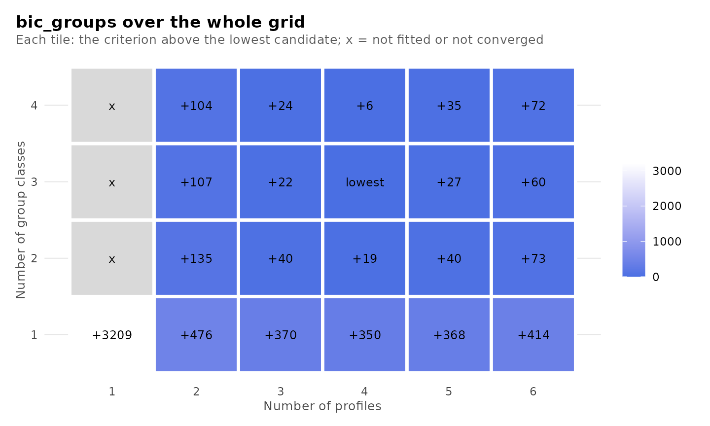
Are the classes distinct?
A candidate may fit the data well yet separate its classes poorly, leaving many units with uncertain class membership. Three statistics derived from the posterior probabilities of membership quantify separation.
-
Relative entropy,
1 - EN / (n log K)forKclasses, ranges from 0, when every unit is equally likely to belong to every class, to 1, when every unit is classified with certainty. It summarizes an entire level in a single value and is undefined (NA) for a level with one class. - Average posterior probability (AvePP) of a class is the mean posterior probability of that class among the units modally assigned to it. Values of 0.7 to 0.8 or above are conventionally taken to indicate adequate separation (Nagin, 2005). Being class-specific, it reveals a single poorly separated class that entropy would average away.
-
Odds of correct classification (OCC) of a class is
(p / (1 - p)) / (r / (1 - r)), wherepis its AvePP andrits estimated proportion. It compares model-based classification with assignment by class proportion alone: values near 1 indicate no improvement, and values of 5 or more are conventionally taken to indicate adequate separation (Nagin, 2005).
The table of candidates summarizes each level by its relative entropy
and the minimum, maximum and mean AvePP, and counts the classes below a
cutoff (0.8 by default, set with cutoff).
get_results(x, "classification") reports, for every class
of every candidate, its size by modal assignment and by estimate, its
AvePP, its OCC and the relative entropy of its level.
get_results(models, "classification")
#> candidate n_profiles n_group_classes model level class n_modal proportion_modal
#> 1 profiles2_groups1 2 1 VVI individuals 1 833 0.58579
#> 2 profiles2_groups1 2 1 VVI individuals 2 589 0.41421
#> 3 profiles3_groups1 3 1 VVI individuals 1 452 0.31786
#> 4 profiles3_groups1 3 1 VVI individuals 2 555 0.39030
#> 5 profiles3_groups1 3 1 VVI individuals 3 415 0.29184
#> 6 profiles4_groups1 4 1 VVI individuals 1 481 0.33826
#> 7 profiles4_groups1 4 1 VVI individuals 2 157 0.11041
#> 8 profiles4_groups1 4 1 VVI individuals 3 419 0.29466
#> 9 profiles4_groups1 4 1 VVI individuals 4 365 0.25668
#> 10 profiles5_groups1 5 1 VVI individuals 1 355 0.24965
#> 11 profiles5_groups1 5 1 VVI individuals 2 419 0.29466
#> 12 profiles5_groups1 5 1 VVI individuals 3 486 0.34177
#> 13 profiles5_groups1 5 1 VVI individuals 4 5 0.00352
#> 14 profiles5_groups1 5 1 VVI individuals 5 157 0.11041
#> 15 profiles6_groups1 6 1 VVI individuals 1 372 0.26160
#> 16 profiles6_groups1 6 1 VVI individuals 2 157 0.11041
#> 17 profiles6_groups1 6 1 VVI individuals 3 378 0.26582
#> 18 profiles6_groups1 6 1 VVI individuals 4 62 0.04360
#> 19 profiles6_groups1 6 1 VVI individuals 5 337 0.23699
#> 20 profiles6_groups1 6 1 VVI individuals 6 116 0.08158
#> 21 profiles2_groups2 2 2 VVI individuals 1 836 0.58790
#> 22 profiles2_groups2 2 2 VVI individuals 2 586 0.41210
#> 23 profiles2_groups2 2 2 VVI groups 1 71 0.66981
#> 24 profiles2_groups2 2 2 VVI groups 2 35 0.33019
#> 25 profiles3_groups2 3 2 VVI individuals 1 472 0.33193
#> 26 profiles3_groups2 3 2 VVI individuals 2 570 0.40084
#> 27 profiles3_groups2 3 2 VVI individuals 3 380 0.26723
#> 28 profiles3_groups2 3 2 VVI groups 1 71 0.66981
#> 29 profiles3_groups2 3 2 VVI groups 2 35 0.33019
#> 30 profiles4_groups2 4 2 VVI individuals 1 490 0.34459
#> 31 profiles4_groups2 4 2 VVI individuals 2 166 0.11674
#> 32 profiles4_groups2 4 2 VVI individuals 3 418 0.29395
#> 33 profiles4_groups2 4 2 VVI individuals 4 348 0.24473
#> 34 profiles4_groups2 4 2 VVI groups 1 71 0.66981
#> 35 profiles4_groups2 4 2 VVI groups 2 35 0.33019
#> 36 profiles5_groups2 5 2 VVI individuals 1 483 0.33966
#> 37 profiles5_groups2 5 2 VVI individuals 2 423 0.29747
#> 38 profiles5_groups2 5 2 VVI individuals 3 31 0.02180
#> 39 profiles5_groups2 5 2 VVI individuals 4 327 0.22996
#> 40 profiles5_groups2 5 2 VVI individuals 5 158 0.11111
#> 41 profiles5_groups2 5 2 VVI groups 1 72 0.67925
#> 42 profiles5_groups2 5 2 VVI groups 2 34 0.32075
#> 43 profiles6_groups2 6 2 VVI individuals 1 465 0.32700
#> 44 profiles6_groups2 6 2 VVI individuals 2 171 0.12025
#> 45 profiles6_groups2 6 2 VVI individuals 3 317 0.22293
#> 46 profiles6_groups2 6 2 VVI individuals 4 90 0.06329
#> 47 profiles6_groups2 6 2 VVI individuals 5 343 0.24121
#> 48 profiles6_groups2 6 2 VVI individuals 6 36 0.02532
#> 49 profiles6_groups2 6 2 VVI groups 1 69 0.65094
#> 50 profiles6_groups2 6 2 VVI groups 2 37 0.34906
#> 51 profiles2_groups3 2 3 VVI individuals 1 832 0.58509
#> 52 profiles2_groups3 2 3 VVI individuals 2 590 0.41491
#> 53 profiles2_groups3 2 3 VVI groups 1 25 0.23585
#> 54 profiles2_groups3 2 3 VVI groups 2 31 0.29245
#> 55 profiles2_groups3 2 3 VVI groups 3 50 0.47170
#> 56 profiles3_groups3 3 3 VVI individuals 1 367 0.25809
#> 57 profiles3_groups3 3 3 VVI individuals 2 576 0.40506
#> 58 profiles3_groups3 3 3 VVI individuals 3 479 0.33685
#> 59 profiles3_groups3 3 3 VVI groups 1 25 0.23585
#> 60 profiles3_groups3 3 3 VVI groups 2 30 0.28302
#> 61 profiles3_groups3 3 3 VVI groups 3 51 0.48113
#> 62 profiles4_groups3 4 3 VVI individuals 1 508 0.35724
#> 63 profiles4_groups3 4 3 VVI individuals 2 402 0.28270
#> 64 profiles4_groups3 4 3 VVI individuals 3 192 0.13502
#> 65 profiles4_groups3 4 3 VVI individuals 4 320 0.22504
#> 66 profiles4_groups3 4 3 VVI groups 1 28 0.26415
#> 67 profiles4_groups3 4 3 VVI groups 2 48 0.45283
#> 68 profiles4_groups3 4 3 VVI groups 3 30 0.28302
#> 69 profiles5_groups3 5 3 VVI individuals 1 123 0.08650
#> 70 profiles5_groups3 5 3 VVI individuals 2 201 0.14135
#> 71 profiles5_groups3 5 3 VVI individuals 3 244 0.17159
#> 72 profiles5_groups3 5 3 VVI individuals 4 457 0.32138
#> 73 profiles5_groups3 5 3 VVI individuals 5 397 0.27918
#> 74 profiles5_groups3 5 3 VVI groups 1 27 0.25472
#> 75 profiles5_groups3 5 3 VVI groups 2 48 0.45283
#> 76 profiles5_groups3 5 3 VVI groups 3 31 0.29245
#> 77 profiles6_groups3 6 3 VVI individuals 1 206 0.14487
#> 78 profiles6_groups3 6 3 VVI individuals 2 446 0.31364
#> 79 profiles6_groups3 6 3 VVI individuals 3 322 0.22644
#> 80 profiles6_groups3 6 3 VVI individuals 4 128 0.09001
#> 81 profiles6_groups3 6 3 VVI individuals 5 168 0.11814
#> 82 profiles6_groups3 6 3 VVI individuals 6 152 0.10689
#> 83 profiles6_groups3 6 3 VVI groups 1 47 0.44340
#> 84 profiles6_groups3 6 3 VVI groups 2 32 0.30189
#> 85 profiles6_groups3 6 3 VVI groups 3 27 0.25472
#> 86 profiles2_groups4 2 4 VVI individuals 1 832 0.58509
#> 87 profiles2_groups4 2 4 VVI individuals 2 590 0.41491
#> 88 profiles2_groups4 2 4 VVI groups 1 25 0.23585
#> 89 profiles2_groups4 2 4 VVI groups 2 12 0.11321
#> 90 profiles2_groups4 2 4 VVI groups 3 22 0.20755
#> 91 profiles2_groups4 2 4 VVI groups 4 47 0.44340
#> 92 profiles3_groups4 3 4 VVI individuals 1 477 0.33544
#> 93 profiles3_groups4 3 4 VVI individuals 2 576 0.40506
#> 94 profiles3_groups4 3 4 VVI individuals 3 369 0.25949
#> 95 profiles3_groups4 3 4 VVI groups 1 46 0.43396
#> 96 profiles3_groups4 3 4 VVI groups 2 15 0.14151
#> 97 profiles3_groups4 3 4 VVI groups 3 20 0.18868
#> 98 profiles3_groups4 3 4 VVI groups 4 25 0.23585
#> 99 profiles4_groups4 4 4 VVI individuals 1 191 0.13432
#> 100 profiles4_groups4 4 4 VVI individuals 2 321 0.22574
#> 101 profiles4_groups4 4 4 VVI individuals 3 510 0.35865
#> 102 profiles4_groups4 4 4 VVI individuals 4 400 0.28129
#> 103 profiles4_groups4 4 4 VVI groups 1 46 0.43396
#> 104 profiles4_groups4 4 4 VVI groups 2 24 0.22642
#> 105 profiles4_groups4 4 4 VVI groups 3 11 0.10377
#> 106 profiles4_groups4 4 4 VVI groups 4 25 0.23585
#> 107 profiles5_groups4 5 4 VVI individuals 1 189 0.13291
#> 108 profiles5_groups4 5 4 VVI individuals 2 38 0.02672
#> 109 profiles5_groups4 5 4 VVI individuals 3 302 0.21238
#> 110 profiles5_groups4 5 4 VVI individuals 4 491 0.34529
#> 111 profiles5_groups4 5 4 VVI individuals 5 402 0.28270
#> 112 profiles5_groups4 5 4 VVI groups 1 23 0.21698
#> 113 profiles5_groups4 5 4 VVI groups 2 25 0.23585
#> 114 profiles5_groups4 5 4 VVI groups 3 11 0.10377
#> 115 profiles5_groups4 5 4 VVI groups 4 47 0.44340
#> 116 profiles6_groups4 6 4 VVI individuals 1 491 0.34529
#> 117 profiles6_groups4 6 4 VVI individuals 2 107 0.07525
#> 118 profiles6_groups4 6 4 VVI individuals 3 341 0.23980
#> 119 profiles6_groups4 6 4 VVI individuals 4 149 0.10478
#> 120 profiles6_groups4 6 4 VVI individuals 5 174 0.12236
#> 121 profiles6_groups4 6 4 VVI individuals 6 160 0.11252
#> 122 profiles6_groups4 6 4 VVI groups 1 26 0.24528
#> 123 profiles6_groups4 6 4 VVI groups 2 14 0.13208
#> 124 profiles6_groups4 6 4 VVI groups 3 23 0.21698
#> 125 profiles6_groups4 6 4 VVI groups 4 43 0.40566
#> estimated_n estimated_proportion average_posterior odds_correct_classification relative_entropy
#> 1 832.92 0.58574 0.982 37.75 0.922
#> 2 589.08 0.41426 0.974 53.24 0.922
#> 3 452.67 0.31834 0.832 10.61 0.772
#> 4 551.11 0.38756 0.964 42.39 0.772
#> 5 418.21 0.29410 0.863 15.17 0.772
#> 6 478.06 0.33619 0.842 10.51 0.735
#> 7 172.20 0.12110 0.803 29.63 0.735
#> 8 405.28 0.28501 0.849 14.14 0.735
#> 9 366.46 0.25771 0.846 15.86 0.735
#> 10 359.22 0.25262 0.847 16.42 0.773
#> 11 405.22 0.28496 0.849 14.13 0.773
#> 12 480.38 0.33782 0.842 10.42 0.773
#> 13 4.89 0.00344 0.962 7368.14 0.773
#> 14 172.30 0.12116 0.804 29.66 0.773
#> 15 340.87 0.23971 0.735 8.78 0.669
#> 16 165.78 0.11658 0.784 27.56 0.669
#> 17 348.85 0.24532 0.780 10.89 0.669
#> 18 95.07 0.06686 0.636 24.43 0.669
#> 19 321.57 0.22614 0.812 14.74 0.669
#> 20 149.86 0.10538 0.627 14.29 0.669
#> 21 834.10 0.58657 0.985 46.08 0.938
#> 22 587.90 0.41343 0.982 76.35 0.938
#> 23 71.52 0.67470 0.992 59.89 0.940
#> 24 34.48 0.32530 0.969 64.80 0.940
#> 25 469.56 0.33021 0.849 11.40 0.790
#> 26 569.85 0.40074 0.979 68.94 0.790
#> 27 382.59 0.26905 0.850 15.45 0.790
#> 28 71.25 0.67213 0.992 62.14 0.943
#> 29 34.75 0.32787 0.977 87.77 0.943
#> 30 480.19 0.33769 0.845 10.71 0.739
#> 31 178.19 0.12531 0.791 26.49 0.739
#> 32 407.65 0.28667 0.858 15.08 0.739
#> 33 355.96 0.25033 0.846 16.41 0.739
#> 34 71.16 0.67132 0.990 48.96 0.937
#> 35 34.84 0.32868 0.975 80.76 0.937
#> 36 464.18 0.32643 0.846 11.33 0.775
#> 37 408.11 0.28700 0.860 15.27 0.775
#> 38 36.89 0.02594 0.838 194.58 0.775
#> 39 337.67 0.23746 0.848 17.88 0.775
#> 40 175.15 0.12317 0.803 28.94 0.775
#> 41 71.40 0.67360 0.990 48.07 0.965
#> 42 34.60 0.32640 0.996 581.20 0.965
#> 43 444.31 0.31245 0.835 11.14 0.732
#> 44 173.96 0.12233 0.781 25.62 0.732
#> 45 294.72 0.20726 0.728 10.24 0.732
#> 46 118.27 0.08317 0.699 25.64 0.732
#> 47 349.82 0.24600 0.845 16.71 0.732
#> 48 40.93 0.02878 0.789 126.37 0.732
#> 49 69.10 0.65185 0.987 39.18 0.946
#> 50 36.90 0.34815 0.972 65.76 0.946
#> 51 830.91 0.58433 0.986 49.28 0.940
#> 52 591.09 0.41567 0.982 75.73 0.940
#> 53 26.66 0.25147 0.905 28.33 0.816
#> 54 30.78 0.29035 0.962 62.25 0.816
#> 55 48.57 0.45818 0.900 10.69 0.816
#> 56 368.95 0.25946 0.845 15.58 0.792
#> 57 574.96 0.40433 0.978 65.03 0.792
#> 58 478.08 0.33621 0.853 11.45 0.792
#> 59 27.65 0.26086 0.898 24.87 0.797
#> 60 31.03 0.29271 0.977 104.20 0.797
#> 61 47.32 0.44643 0.864 7.90 0.797
#> 62 497.03 0.34953 0.854 10.86 0.739
#> 63 391.99 0.27566 0.847 14.60 0.739
#> 64 202.20 0.14220 0.801 24.24 0.739
#> 65 330.78 0.23261 0.842 17.57 0.739
#> 66 27.40 0.25844 0.874 19.96 0.823
#> 67 48.01 0.45292 0.915 13.01 0.823
#> 68 30.60 0.28864 0.981 127.50 0.823
#> 69 141.26 0.09934 0.628 15.34 0.714
#> 70 211.64 0.14884 0.804 23.52 0.714
#> 71 248.08 0.17446 0.804 19.44 0.714
#> 72 435.18 0.30603 0.817 10.09 0.714
#> 73 385.84 0.27134 0.843 14.42 0.714
#> 74 28.08 0.26491 0.917 30.75 0.854
#> 75 46.73 0.44081 0.918 14.29 0.854
#> 76 31.19 0.29428 0.987 180.98 0.854
#> 77 206.70 0.14536 0.777 20.53 0.674
#> 78 414.48 0.29148 0.795 9.42 0.674
#> 79 297.05 0.20890 0.733 10.42 0.674
#> 80 150.21 0.10563 0.711 20.85 0.674
#> 81 191.71 0.13482 0.655 12.18 0.674
#> 82 161.85 0.11382 0.788 28.90 0.674
#> 83 46.26 0.43639 0.925 15.84 0.853
#> 84 32.68 0.30828 0.984 137.98 0.853
#> 85 27.07 0.25534 0.915 31.49 0.853
#> 86 829.91 0.58362 0.986 50.18 0.942
#> 87 592.09 0.41638 0.984 85.01 0.942
#> 88 24.59 0.23201 0.868 21.73 0.798
#> 89 11.33 0.10689 0.851 47.77 0.798
#> 90 22.34 0.21071 0.877 26.81 0.798
#> 91 47.74 0.45039 0.912 12.62 0.798
#> 92 476.54 0.33512 0.853 11.52 0.793
#> 93 576.30 0.40527 0.980 70.36 0.793
#> 94 369.16 0.25960 0.843 15.32 0.793
#> 95 47.04 0.44379 0.902 11.51 0.772
#> 96 13.62 0.12851 0.841 35.95 0.772
#> 97 20.96 0.19774 0.868 26.74 0.772
#> 98 24.37 0.22995 0.843 17.98 0.772
#> 99 201.57 0.14175 0.801 24.37 0.740
#> 100 332.98 0.23416 0.843 17.58 0.740
#> 101 494.01 0.34741 0.850 10.64 0.740
#> 102 393.44 0.27668 0.853 15.17 0.740
#> 103 46.89 0.44232 0.903 11.76 0.803
#> 104 22.90 0.21605 0.867 23.74 0.803
#> 105 10.91 0.10288 0.898 76.55 0.803
#> 106 25.31 0.23874 0.873 21.82 0.803
#> 107 201.07 0.14140 0.803 24.79 0.751
#> 108 61.45 0.04322 0.786 81.48 0.751
#> 109 305.33 0.21472 0.831 17.96 0.751
#> 110 461.34 0.32443 0.826 9.90 0.751
#> 111 392.80 0.27623 0.853 15.15 0.751
#> 112 23.02 0.21714 0.926 44.87 0.830
#> 113 25.69 0.24237 0.882 23.26 0.830
#> 114 11.14 0.10505 0.899 75.62 0.830
#> 115 46.16 0.43544 0.909 12.98 0.830
#> 116 466.75 0.32823 0.830 9.98 0.725
#> 117 114.80 0.08073 0.847 63.10 0.725
#> 118 320.60 0.22546 0.806 14.24 0.725
#> 119 167.55 0.11783 0.765 24.39 0.725
#> 120 192.57 0.13542 0.797 25.09 0.725
#> 121 159.73 0.11233 0.654 14.97 0.725
#> 122 25.05 0.23630 0.898 28.53 0.851
#> 123 13.24 0.12488 0.907 68.41 0.851
#> 124 23.33 0.22010 0.919 40.18 0.851
#> 125 44.38 0.41872 0.940 21.71 0.851plot(x, what = "diagnostics") displays relative entropy
and the minimum AvePP across candidates, with the cutoff indicated;
what = "entropy" and what = "avepp" display
either one. For a single fitted candidate,
plot_diagnostics() displays the posterior probability of
each unit’s assigned class, each unit’s relative entropy, the class
sizes and the matrix of average posterior probabilities, for the
profiles and, when there are two or more group classes, for the group
classes (what = "group_posteriors", etc.).
plot(models, what = "diagnostics")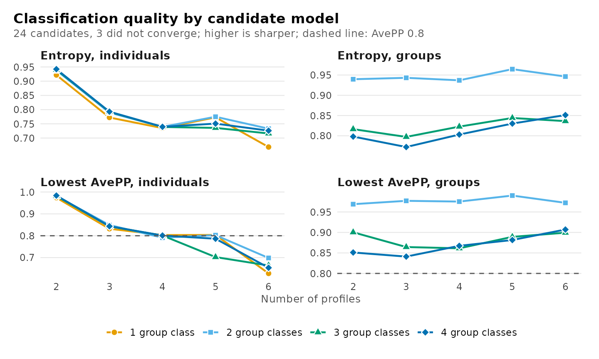
Entropy and AvePP may diverge, and the divergence is informative. AvePP depends only on the posterior probability of each unit’s assigned class, whereas entropy depends on the full vector of posterior probabilities. A unit with posterior probabilities of 0.70, 0.10, 0.10 and 0.10 and a unit with 0.70 and 0.30 contribute equally to AvePP, but the former, whose uncertainty is distributed across all classes, reduces entropy considerably more. Moreover, entropy is more sensitive to a minority of highly uncertain units than to a majority of nearly certain ones. A level comprising mostly well-classified units and a tail of uncertain ones therefore exhibits moderate AvePP together with low entropy.
The two levels of a two-level model are classified on the basis of
different amounts of information. A group’s class is inferred from all
of its observations jointly, whereas an observation’s profile is
inferred from its own responses alone; group classes are consequently
classified with considerably greater certainty. For a single candidate,
plot_diagnostics() displays both levels:
plot_diagnostics(get_candidate(models, "profiles4_groups3"),
what = "group_posteriors")
When all candidates separate their profiles poorly, such that no
number of classes yields adequate entropy or minimum AvePP, the
indicators do not discriminate well among individual observations. The
number of classes is then determined from the information criteria and
substantive interpretation, and the limited separation is reported as a
limitation. In this situation modal class assignments are an unreliable
substitute for the latent classes in subsequent analyses, and
bias-corrected three-step estimators (r3step(),
three_step()) should be used instead.
Classification quality is not in itself a criterion for the number of classes: models with fewer classes are generally better separated, so selection on entropy alone favours too few classes. It serves to discriminate between candidates that the information criteria do not distinguish, and it determines how the selected classes may be used, for example whether modal assignments can represent them in subsequent analyses.
Can the estimate be trusted?
Estimation checks
Because the likelihood is multimodal, a solution replicated from
several random starts is more credible than one obtained from a single
start. An estimate on the boundary of the parameter space, such as a
variance at its lower bound or a class with negligible membership,
indicates a model too complex for the data.
plot(x, what = "trust") represents each candidate by a tile
labelled with the number of starts that reached its maximum likelihood
and shaded by the first problem detected:
| Status | Meaning |
|---|---|
| best replicated | converged within the interior of the parameter space, with the maximum likelihood reached by more than one start |
| best found once | as above, but the maximum likelihood was reached by a single start |
| on a boundary | an estimate lies on the boundary of the parameter space |
| not converged | the EM algorithm terminated before meeting its convergence criterion |
not fitted (x) |
not identified, or estimation failed (the error is retained in the table) |
plot(models, what = "trust")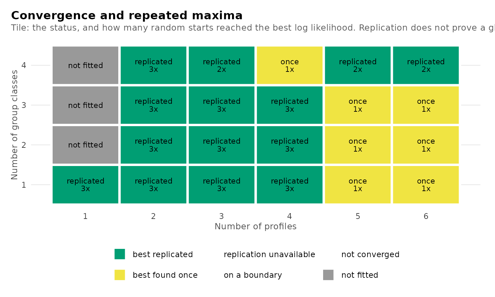
A candidate whose maximum was found only once should be re-estimated
with more starts before it is selected, together with the remainder of
the grid (see Random starts). If re-estimation increases its
likelihood, the earlier solution was a local maximum and is superseded;
entropy and AvePP often increase as well. A higher AvePP is never a
ground for preferring one solution of a given candidate over another:
the maximum likelihood solution is the estimate. The columns
converged, boundary,
n_best_replicated, warnings and
error of the table of candidates report the same
diagnostics. A candidate on a boundary whose smallest class holds about
one observation is a degenerate solution rather than a class;
re-estimating the grid with boundary = "exclude" replaces
it with the best solution in the interior of the parameter space (see
Random starts).
The smallest class
A class comprising a very small proportion of units is difficult to
interpret and is estimated from little data.
plot(x, what = "smallest") displays the estimated
proportion of the smallest class of every candidate, with a reference
line at 5%, a conventional threshold rather than a rule.
plot(models, what = "smallest")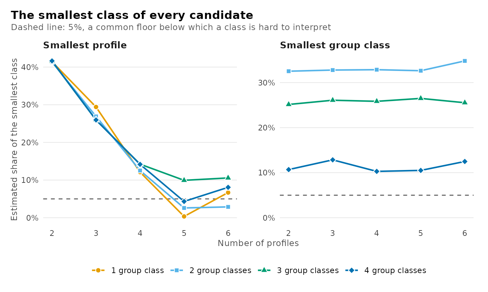
All of the plots together
plot(x, what = "selection") returns the deltas, the
heatmap, the smallest class, the estimation diagnostics and the
classification diagnostics as a list of plots displayed in sequence.
using sets the criterion for the first two and
cutoff the AvePP threshold for the last.
plot(models, what = "selection")
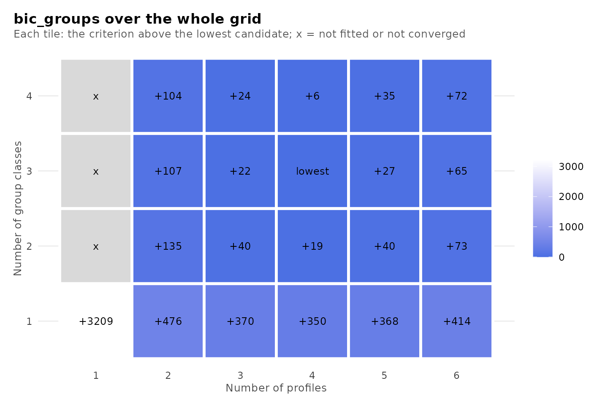
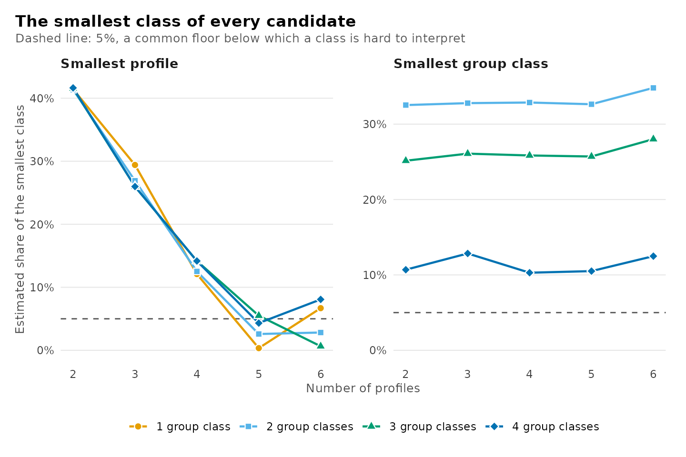
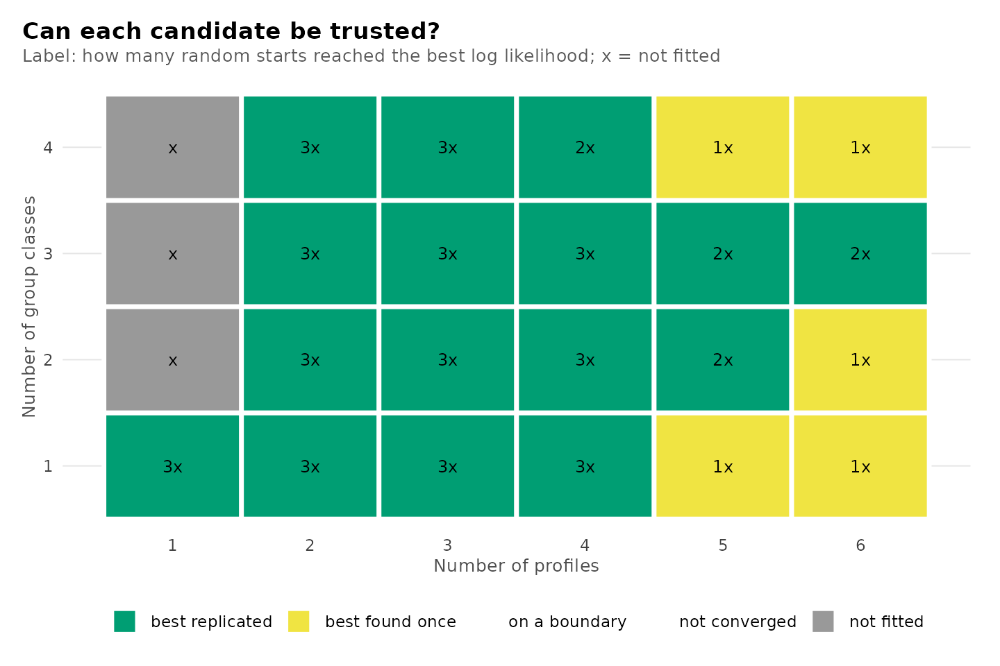
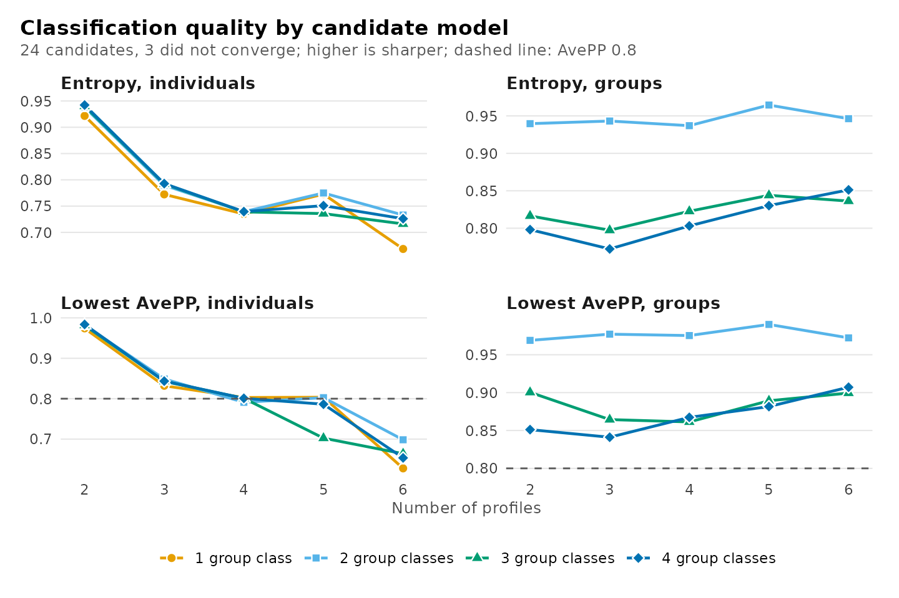
How the profiles divide
The clustering tree shows how the profiles of each model are partitioned in the model with one additional profile: each profile is linked to the profiles of the larger model that receive its observations (Zappia and Oshlack, 2018). A profile that divides cleanly into two suggests a substantive distinction, whereas a profile formed from several profiles of the smaller model suggests a reallocation of observations rather than a refinement.
plot(models, what = "tree")
Comparing chosen candidates
Once the evidence has reduced the choice to a few candidates,
compare_models() tabulates them side by side, specified by
label or by numbers of classes. The table adds each candidate’s
difference in BIC from the smallest value among those compared
(delta_bic) and its BIC weight,
exp(-delta_bic / 2) normalized over the compared
candidates, which approximates the posterior probability of each model
under equal prior probabilities, assuming one of them is correct
(Wagenmakers and Farrell, 2004). The weights are conditional on the set
of candidates compared.
comparison <- compare_models(models, "profiles3_groups3", "profiles4_groups3",
"profiles4_groups2")
comparison
#> Model comparison
#>
#> Model Profiles Group classes k LogLik BIC ΔBIC Weight ICL Entropy Min AvePP < 0.8 Group entropy Group min AvePP
#> ----------------- -------- ------------- -- -------- -------- ----- ------ -------- ------- --------- ----- ------------- ---------------
#> profiles3_groups3 3 3 38 -8348.43 16874.07 21.92 0.000 17622.03 0.79 0.85 0 0.80 0.86
#> profiles4_groups3 4 3 51 -8307.15 16852.14 0.00 1.000 18014.13 0.74 0.80 0 0.82 0.87
#> profiles4_groups2 4 2 47 -8326.19 16871.57 19.43 0.000 18021.23 0.74 0.79 1 0.94 0.98
plot(comparison)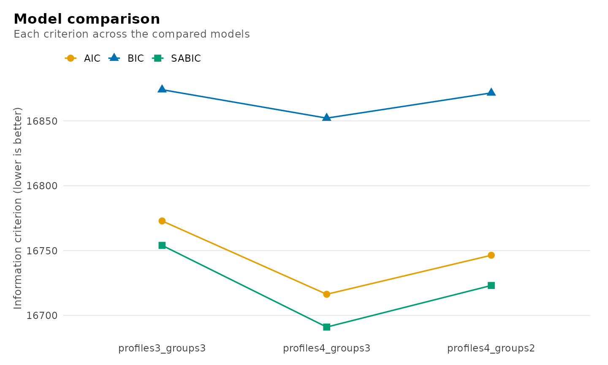
The fitted model corresponding to a row is extracted with
get_candidate(), by label or by numbers of classes.
chosen <- get_candidate(models, "profiles4_groups3")
chosen
#> Two-level latent profile analysis: 4 profiles, 3 group classes
#> 1422 individuals in 106 groups; varying diagonal residual covariance (VVI)
#> Log likelihood: -8307.154320 | AIC: 16716.309 | BIC (groups): 16852.144
#> Converged: TRUE | iterations: 48 | best start: 3/3
#>
#> profile browse lectures forum_read forum_post attendance count proportion
#> 1 0.412 0.232 0.490 0.383 0.309 497 0.350
#> 2 -0.564 -0.561 -0.695 -0.676 -0.656 392 0.276
#> 3 -1.113 -0.685 -1.200 -0.880 -1.417 202 0.142
#> 4 0.728 0.734 0.821 0.763 1.180 331 0.233
#>
#> Variances and standard errors: get_results(x, "profiles").
#> Every other table: get_results(x, what = ), or get_results(x, "all").Testing one more class
The conventional likelihood ratio test is invalid for comparing
mixtures with k and k + 1 classes, because the
null model lies on the boundary of the parameter space of the
alternative, where the test statistic does not follow its usual
asymptotic distribution. bootstrap_lrt() approximates the
null distribution by parametric bootstrap (McLachlan, 1987; Nylund,
Asparouhov and Muthén, 2007): data sets are simulated from the fitted
null model, both models are re-estimated on each, and the observed
statistic is referred to the simulated distribution. With B
simulated data sets of which b yield a statistic at least
as large as the observed one, the p-value is
(b + 1) / (B + 1), which is bounded below by
1 / (B + 1). If any replicate fails an estimation check,
the p-value is withheld rather than computed from the remaining
replicates. The example uses 19 replicates, for which the smallest
attainable p-value is 0.05; applied analyses should use 99 or more.
smaller <- get_candidate(models, "profiles3_groups3")
larger <- get_candidate(models, "profiles4_groups3")
test <- bootstrap_lrt(smaller, larger, data = course_engagement,
iter = 19, n_starts = 2, seed = 1)
test
#> Parametric bootstrap likelihood-ratio comparison
#> Null: 3 profiles, 3 group classes; alternative: 4 profiles, 3 group classes
#> Observed statistic: 82.548767
#> p-value: 0.05 (Monte Carlo SE 0.0487) from 19 of 19 valid replicates
plot(test)
Putting the evidence together
No algorithm converts this evidence into a number of classes, and latents applies none. A defensible decision is reached by examining the evidence in a fixed sequence and reporting each step:
-
Analytic decisions: report the number of random
starts, whether starts at a variance bound were excluded
(
boundary), any centring or scaling, the treatment of missing values, and the number of observations with no observed indicator. - Sample-size convention: specify the convention before examining any criterion and apply it consistently.
- Criterion minima: examine the minima under that convention, noting where the criteria agree and the direction in which they disagree. A minimum at the boundary of the grid requires an extended grid.
-
Deltas and knees: where the criteria decrease
throughout, examine the magnitude of successive decreases and report the
knee with its
distanceand stability. - Classification quality: for the remaining candidates, report relative entropy and the minimum AvePP and OCC at each level.
- Estimation diagnostics: verify replication of the maximum likelihood, the absence of boundary estimates and the size of the smallest class; re-estimate candidates whose maximum was found only once.
- Likelihood ratio test: when the evidence is equivocal, test the leading candidate against its neighbour with the bootstrap likelihood ratio test.
- Substantive interpretation: among candidates that the statistics do not distinguish, select the one whose classes are distinct and substantively meaningful for the research question, and state the rationale.
The tables underlying each step are returned by the functions above, so that the reported decision can be reproduced from the reported evidence.
Functions
| Call | Result |
|---|---|
| enumerate_classes(…, n_starts = , centering = , scaling = , missing = “fiml”) | The same starts, centring, scaling and missing-data handling for every candidate |
| enumerate_classes(…, boundary = “exclude”) | Starts with a variance at its lower bound set aside for every candidate |
| as.data.frame(models) | One row per candidate: every criterion, classification summaries and checks |
| get_results(models, “best”) | The candidate at the minimum of each criterion and convention |
| plot(models), plot(models, what = “bic_groups”), what = “all” | Criteria across the candidates, lowest ringed |
| get_results(models, “deltas”, using = ) | Decrease in a criterion from one profile fewer and one group class fewer |
| plot(models, what = “deltas”, using = ) | The decreases along profiles and along group classes |
| get_results(models, “knees”, using = ) | Chord-distance knee of each line, with its stability |
| plot(models, what = “heatmap”, using = ) | Distance of every candidate from the lowest criterion |
| get_results(models, “classification”) | Size, AvePP, OCC and entropy of every class of every candidate |
| get_results(models, “candidates”, cutoff = ) | The table of candidates with another AvePP cutoff |
| plot(models, what = “diagnostics”, “entropy” or “avepp”, cutoff = ) | Relative entropy and lowest AvePP across the candidates |
| get_results(fit, “entropy”) | Relative entropy of one fit at each level, over the classified units |
| plot_diagnostics(fit), what = “group_posteriors” and the like | Certainty, uncertainty, sizes and AvePP of one fit, profiles and group classes |
| plot(models, what = “trust”) | Convergence, boundary and replication of every candidate |
| plot(models, what = “smallest”) | Share of the smallest class of every candidate |
| plot(models, what = “selection”) | Deltas, heatmap, smallest class, trust and diagnostics together |
| plot(models, what = “tree”) | How the profiles divide as more are added |
| compare_models(models, “name”, …) | Chosen candidates side by side, with BIC weights |
| get_candidate(models, “name”) | One fitted candidate |
| bootstrap_lrt(smaller, larger, data, iter) | Bootstrap likelihood ratio test of k against k + 1 classes |
References
Akaike, H. (1974). A new look at the statistical model identification. IEEE Transactions on Automatic Control, 19, 716–723.
Banfield, J. D., & Raftery, A. E. (1993). Model-based Gaussian and non-Gaussian clustering. Biometrics, 49, 803–821.
Biernacki, C., Celeux, G., & Govaert, G. (2000). Assessing a mixture model for clustering with the integrated completed likelihood. IEEE Transactions on Pattern Analysis and Machine Intelligence, 22, 719–725.
Biernacki, C., & Govaert, G. (1997). Using the classification likelihood to choose the number of clusters. Computing Science and Statistics, 29, 451–457.
Bozdogan, H. (1987). Model selection and Akaike’s information criterion. Psychometrika, 52, 345–370.
Cavanaugh, J. E. (1999). A large-sample model selection criterion based on Kullback’s symmetric divergence. Statistics and Probability Letters, 42, 333–343.
McLachlan, G. J. (1987). On bootstrapping the likelihood ratio test statistic for the number of components in a normal mixture. Applied Statistics, 36, 318–324.
Nagin, D. S. (2005). Group-based modeling of development. Harvard University Press.
Nylund, K. L., Asparouhov, T., & Muthén, B. O. (2007). Deciding on the number of classes in latent class analysis and growth mixture modeling: A Monte Carlo simulation study. Structural Equation Modeling, 14, 535–569.
Satopää, V., Albrecht, J., Irwin, D., & Raghavan, B. (2011). Finding a “kneedle” in a haystack: detecting knee points in system behavior. 31st International Conference on Distributed Computing Systems Workshops, 166–171.
Schwarz, G. (1978). Estimating the dimension of a model. The Annals of Statistics, 6, 461–464.
Sclove, S. L. (1987). Application of model-selection criteria to some problems in multivariate analysis. Psychometrika, 52, 333–343.
Wagenmakers, E.-J., & Farrell, S. (2004). AIC model selection using Akaike weights. Psychonomic Bulletin & Review, 11, 192–196.
Zappia, L., & Oshlack, A. (2018). Clustering trees: a visualization for evaluating clusterings at multiple resolutions. GigaScience, 7(7), giy083.